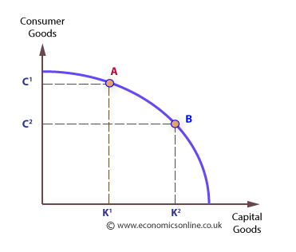

#Econ102/Chapter/2
Production Efficiency: The ability to produce goods at their lowest resource cost.
Allocative Efficiency: The ability to produce goods that society desires.
Production Possibilities Frontier: (PPF) A model that shows the combinations of two goods a society can produce at full employment.
Absolute Advantage: When a country can produce more of a good than another.
Comparative Advantage: When one country can produce goods at a lower opportunity cost.
Labor: The mental and physical talents of individuals used to produce products and services. Payment is wages, sometimes called “human capital”.
Entrepreneurial Ability: Combining land, labor, and capital to produce goods and services. Also includes the risks of running a business. Earns profits.
Capital: All manufactured products that are used to make other products. (Manufacturing equipment, supplies, etc)
Land: Land and other natural resources. (Water, oil, copper, natural gas, coal, and forests)

What you sacrifice / What you gain = Opportunity Cost
USA --- Italy
8:4 --- 6:8
1:.5 --- 1:1.33 = OC of Music
2:1 --- .75:1 = OC of Pizza
USA has comparative advantage for music, Italy for pizza